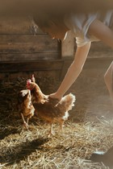
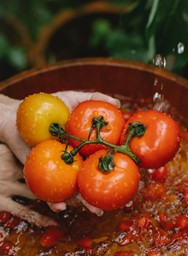
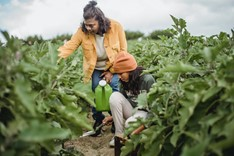
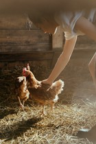
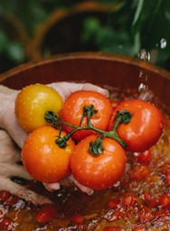
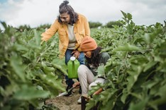
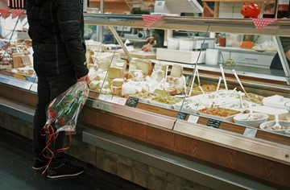
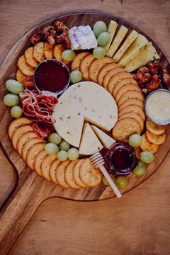
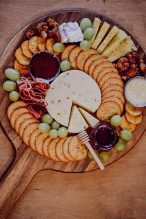

Gastronomy Blog

Deliziosi Gelato Days
Are you craving something soft, sweet, and flavourful for your next cheat meal or a healthier dessert option to satisfy that sweet tooth?...Read More
Well, Deliziosi is launching Deliziosi Gelato Days that starts on December 1st and will run
until
December 22nd. Deliziosi invites you to bring your family and friends to enjoy our artisanal
gelatos in
a wide variety of flavours at a special price!!!
What is the difference between Gelatos and Ice Cream?
Gelatos and ice cream are both frozen desserts, but...gelatos contain less fat because they are made with a higher amount of milk than cream, whereas, ice cream is created with only cream. Another difference lies in the process to make either of these desserts. Although both require an ice cream machine to be made, gelatos are churned at slower rate to prevent too much air being whipped into the mix, and thus, making it denser. Unlike ice cream, gelatos must be served at a higher temperature because otherwise it would be too hard to scoop!
Types of Gelatos
By using only, the best locally-sourced, freshest, and hand-selected ingredients, our team of experts will prepare the three most common types of gelatos that are found in many shops in Italy: gelato, sorbetto, and granita. Not sure which type to try? Here is a brief overview of each:
Gelato
Base: milk, sugar, air, flavour Process: churned in ice cream machine, stored at high temperature Texture: soft
Sorbetto (dairy-free)
Base: sugar, water, flavour (fruit puree, fruit juice, wine, coffee, and many other options – Feel free to ask one of our Deliziosi staff members!) Process: churned in ice cream machine Texture: smooth, icier than gelato
Granita
Base: sugar, water, flavour (fruit puree, fruit juice, wine, coffee, and many other options – Feel free to ask one of our Deliziosi staff members!) Process: frozen on a thin sheet, scraped instead of scooped, Texture: coarser than the other types Enjoy it with whipped cream on top!
What is the difference between Gelatos and Ice Cream?
Gelatos and ice cream are both frozen desserts, but...gelatos contain less fat because they are made with a higher amount of milk than cream, whereas, ice cream is created with only cream. Another difference lies in the process to make either of these desserts. Although both require an ice cream machine to be made, gelatos are churned at slower rate to prevent too much air being whipped into the mix, and thus, making it denser. Unlike ice cream, gelatos must be served at a higher temperature because otherwise it would be too hard to scoop!
Types of Gelatos
By using only, the best locally-sourced, freshest, and hand-selected ingredients, our team of experts will prepare the three most common types of gelatos that are found in many shops in Italy: gelato, sorbetto, and granita. Not sure which type to try? Here is a brief overview of each:
Gelato
Base: milk, sugar, air, flavour Process: churned in ice cream machine, stored at high temperature Texture: soft
Sorbetto (dairy-free)
Base: sugar, water, flavour (fruit puree, fruit juice, wine, coffee, and many other options – Feel free to ask one of our Deliziosi staff members!) Process: churned in ice cream machine Texture: smooth, icier than gelato
Granita
Base: sugar, water, flavour (fruit puree, fruit juice, wine, coffee, and many other options – Feel free to ask one of our Deliziosi staff members!) Process: frozen on a thin sheet, scraped instead of scooped, Texture: coarser than the other types Enjoy it with whipped cream on top!

A Mini Pasta Guide
Did you know that there’s more than 600 diverse types of pasta shapes that varies across each Italian region! (There are even multiple names for the same pasta type)...Read More
With the myriad of pasta types, there are sauces that best compliment and accompany the
dish. You don’t need to fret figuring this out because at Deliziosi our chefs are well
experienced and skilled to pair and prepare pasta dishes such as, our Creamy Fettuccine
Alfredo Pasta that will satisfy your hunger.
Now let us take a little tour across Italy, from north to south and explore some of the many pasta shapes:
North
Overview of Ingredients: soft wheat flour, such as all-purpose flour or type 00
Process: eggs are used to bind the dough
Some Examples:
Central
Overview of Ingredients: durum wheat flour, water
Process: eggs are not usually required – durum wheat flour is mixed with water
Some Examples:
How to cook Pasta?
Now let us take a little tour across Italy, from north to south and explore some of the many pasta shapes:
North
Overview of Ingredients: soft wheat flour, such as all-purpose flour or type 00
Process: eggs are used to bind the dough
Some Examples:
- Canederli
- Trentino-Alto Adige Region
- Looks like gnocchi
- Ravioli di Zucca
- Lombardia Region
- Pasta stuffed with pumpkin
- Cjalsons
- Friuli-Venezia Giulia Region
- Half-moon shaped that are filled with greens, local cheese, and dried fruits
Central
Overview of Ingredients: durum wheat flour, water
Process: eggs are not usually required – durum wheat flour is mixed with water
Some Examples:
- Paccheri
- Campania Region
- Thick tube shaped
- Casarecce
- Sicilia Region
- Short pasta, edges are curled, has a groove along the middle
- Fileja
- Calabria Region
- Shaped like a long screw
How to cook Pasta?
- Add water to a large pan
- Once the water boils, add salt and the pasta
- Check to see if the pasta is “al-dente” - when the pasta is still chewy and firm
- Drain under warm water, not cold water!
- Add sauce
- Cook for a few minutes
- Serve, gustare un delizioso pasto (enjoy a delicious meal)!

Know your ingredients
We take pride in being transparent about food sourcing, ingredients lists and our ecological impact. The experts at Deliziosi hand-select each ingredient for every meal we serve. Want to know more about our farmers?...Read More
We work hard to source fresh quality ingredients from our local farmers who share our same
mission. When you dine with us, more of our money goes to those who grow our quality
vegetables and raise our animals. Our guests value us for our transparency in the source of
the ingredients for all the menu items. Let’s get to know our farmers more!
 Farm fresh
Farm fresh is 50-acre farm located at 9528 coney road, Halton hills, Toronto. We are committed at Farm fresh in using science-driven, sustainable practices which ensures we provide quality produce to our clients every time. We offer a variety of fruits, vegetables, poultry and seasonal produce which you can pick at various times of the year.
 Early bird farm
Early bird farm is located at 7256 bell School line, Milton, Ontario.
The Early bird is 20-acre farm on Milton, Ontario. Since 2007 we have grown a wide variety of vegetables, herbs, fruits using mostly traditional practices. We decided to transition to organic practices in 2009 and after much effort we were able to create a balance in our farming methods and minimum negative impact to our planet. Today we have a wide variety of produce, poultry and raw honey. We pride ourselves in offering not just produce but also some client favorites like baked goods, jams and preserves and seasonal treats.
 Elie’s Farm
We are a family- owned 40-acre farm located at Markham, Ontario that focuses on growing crops that enrich the health of the communities around us. We also contribute to a healthier environment each day through soil regeneration and biodynamic practices. We welcome our customers to walk through our fields, view our farming practices, buy baked goods made from our harvest every week.
 Farm fresh
Farm fresh is 50-acre farm located at 9528 coney road, Halton hills, Toronto. We are committed at Farm fresh in using science-driven, sustainable practices which ensures we provide quality produce to our clients every time. We offer a variety of fruits, vegetables, poultry and seasonal produce which you can pick at various times of the year.
 Early bird farm
Early bird farm is located at 7256 bell School line, Milton, Ontario.
The Early bird is 20-acre farm on Milton, Ontario. Since 2007 we have grown a wide variety of vegetables, herbs, fruits using mostly traditional practices. We decided to transition to organic practices in 2009 and after much effort we were able to create a balance in our farming methods and minimum negative impact to our planet. Today we have a wide variety of produce, poultry and raw honey. We pride ourselves in offering not just produce but also some client favorites like baked goods, jams and preserves and seasonal treats.
 Elie’s Farm
We are a family- owned 40-acre farm located at Markham, Ontario that focuses on growing crops that enrich the health of the communities around us. We also contribute to a healthier environment each day through soil regeneration and biodynamic practices. We welcome our customers to walk through our fields, view our farming practices, buy baked goods made from our harvest every week.

Celebrate cheese fest this holiday season at Deliziosi
We are bringing the most-demanded cheese fest back this holiday season at Deliziosi. Don't miss this opportunity to try five artisan cheeses and gift your loved ones with a personalised charcuterie platter from dec 17 to 23....Read More
Here at deliziosi we offer unique opportunity to taste a wide variety of cheese from
Parmigiano Reggiano DOP, Pecorino Romano DOP, Gorgonzola DOP, Taleggio DOP and Mozzarella di
Bufala DOP. DOP is short for Denominazione di Origine Protetta (literally “Protected
Designation of Origin”) which ensures that products were made by local farmers and artisans,
using traditional methods.With the myriad of pasta types, there are sauces that best
compliment and accompany the
dish. You don’t need to fret figuring this out because at Deliziosi our chefs are well
experienced and skilled to pair and prepare pasta dishes such as, our Creamy Fettuccine
Alfredo Pasta that will satisfy your hunger.
We are happy to organize a cheese fest for all our customers from Dec 17 to Dec 23. Celebrate your holidays with us and enjoy tasting authentic cheeses with friends and family. Don’t miss this chance where we hold a weeklong tasting of extraordinary cheeses from our favorite cheesemakers. Discover your new favorites and don’t miss this chance where you can taste before you buy!
 Gift your friends this holiday season with personalized charcuterie platter at just $25. You can CYO platter with cured meat, veggies, olives, dried fruits, and crackers. All available at Deliziosi!
Mark your calendars and visit us at Deliziosi!
In- store tasting for Parmigiano Reggiano DOP
December 17 from 2 p.m. to 4 p.m.
December 18 from 11 a.m. to 3 p.m.
December 19 from 3 p.m. to 6 p.m.
December 21 from 3 p.m. to 7 p.m.
tastings of Mozzarella di Bufala DOP
December 19 from 12 p.m. to 3 p.m.
December 20 from 2 p.m. to 6 p.m.
December 22 from 3 p.m. to 7 p.m.
brIn-store tastings of Gorgonzola DOP & Taleggio DOP
December 23 from 12 p.m. to 4 p.m.
In-store tastings of pecorino Romano DOP
December 22 from 11 a.m. to 3 p.m.
We are happy to organize a cheese fest for all our customers from Dec 17 to Dec 23. Celebrate your holidays with us and enjoy tasting authentic cheeses with friends and family. Don’t miss this chance where we hold a weeklong tasting of extraordinary cheeses from our favorite cheesemakers. Discover your new favorites and don’t miss this chance where you can taste before you buy!
 Gift your friends this holiday season with personalized charcuterie platter at just $25. You can CYO platter with cured meat, veggies, olives, dried fruits, and crackers. All available at Deliziosi!
Mark your calendars and visit us at Deliziosi!
In- store tasting for Parmigiano Reggiano DOP
December 17 from 2 p.m. to 4 p.m.
December 18 from 11 a.m. to 3 p.m.
December 19 from 3 p.m. to 6 p.m.
December 21 from 3 p.m. to 7 p.m.
tastings of Mozzarella di Bufala DOP
December 19 from 12 p.m. to 3 p.m.
December 20 from 2 p.m. to 6 p.m.
December 22 from 3 p.m. to 7 p.m.
brIn-store tastings of Gorgonzola DOP & Taleggio DOP
December 23 from 12 p.m. to 4 p.m.
In-store tastings of pecorino Romano DOP
December 22 from 11 a.m. to 3 p.m.